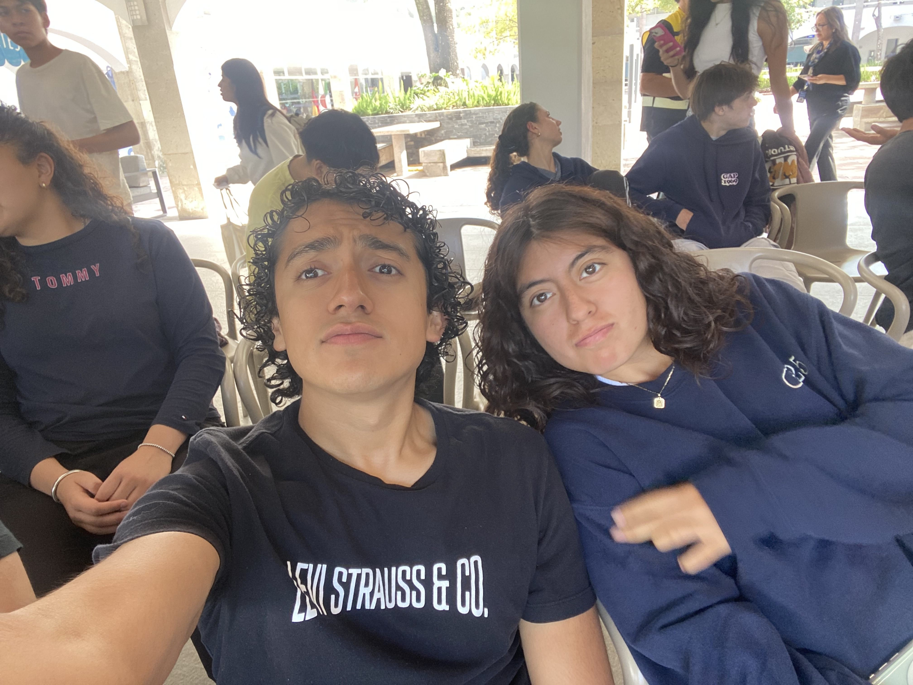
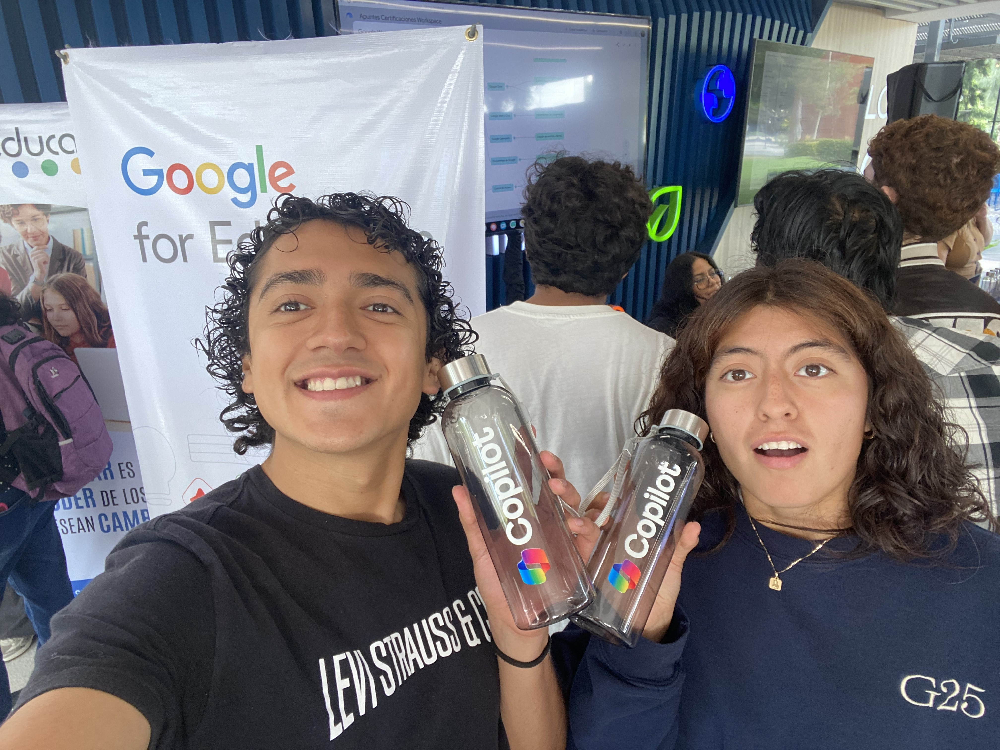
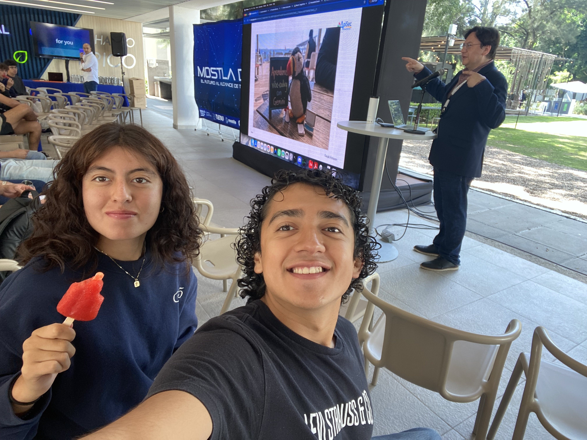
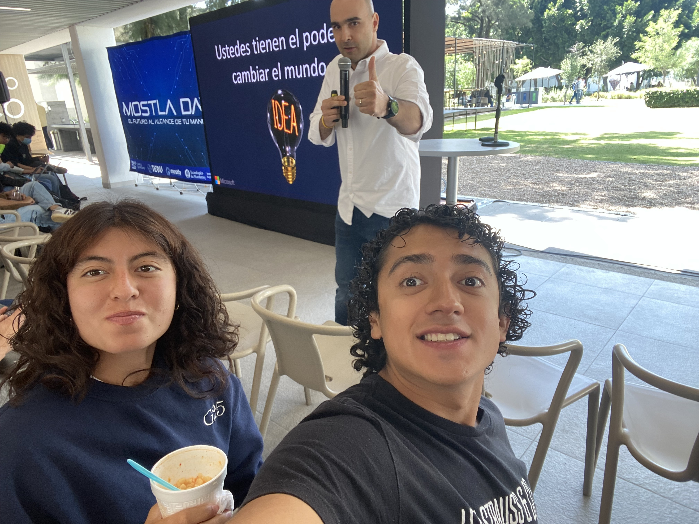
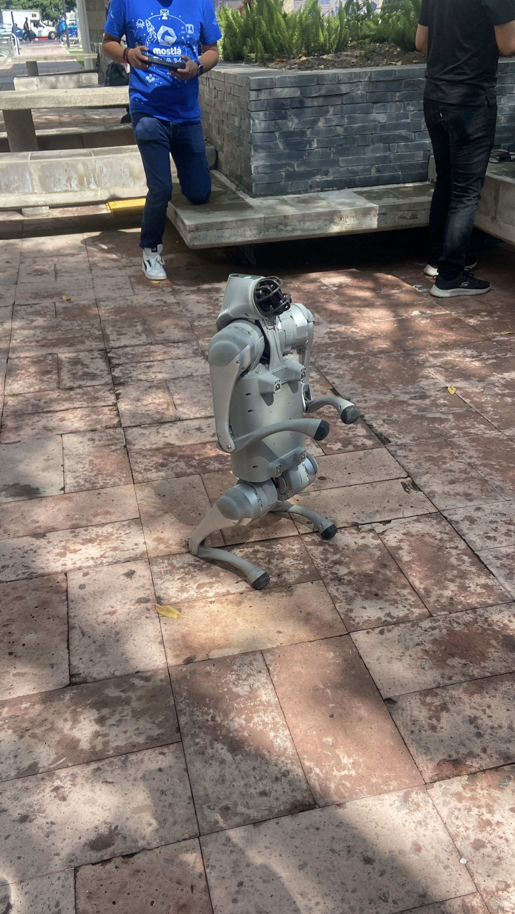
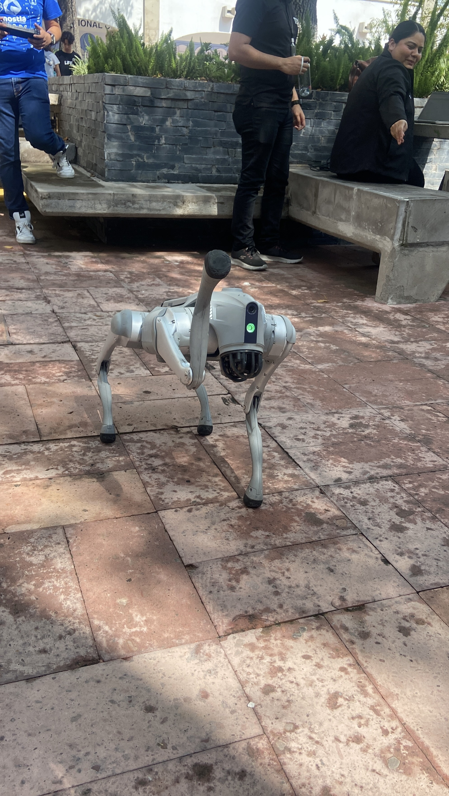

This day I went to Mostla Day, a technology event with the slogan "the future within your reach". I went with my friend Denisse.
We arrived early and we had to wait a little bit before everything started. There were a lot of students sitting around waiting too.
After that we walked around the stands. There were companies like Google for Education and Microsoft.
At one of the stands they gave us these Copilot water bottles.

The main thing we did was go to two forums about Artificial Intelligence. Both were really interesting and they talked about how AI is changing the way we study and work.

In the first forum the speaker showed us examples on the big screen of things you can do with AI.

The second speaker was very motivating. He spoke about copilot and all its features.
Esquites: We ate esquites during the forums.
Paletas de hielo: We also got ice pops.


My favorite part of the day was the robot dog. The dog walked around the patio like a real dog.
It could even stand up on its back legs. It was really cool to see something like this in person.